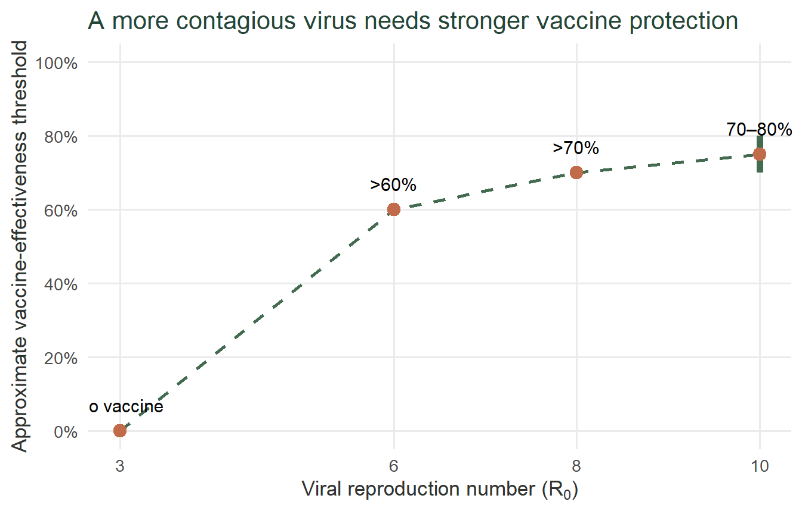

During the COVID-19 pandemic, Australia relied on border quarantine to prevent infected travellers from spreading the virus in the community. The thing is, more transmissible variants like Delta made quarantine harder to manage. Vaccination offered extra protection, but its effectiveness varied depending on the vaccine and the variant. For example, two doses of the Pfizer-BioNTech vaccine were about 88% effective against symptomatic Delta infection, compared with around 67% for the Oxford-AstraZeneca vaccine (Lopez Bernal et al., 2021).
This raised an important question: Could vaccination keep border quarantine safe as the virus evolved, or did strong infection-control measures remain essential? In this post we’ll be taking a look at how Zachreson et al. (2022) used computer simulations to examine how viral transmissibility, vaccine effectiveness, community vaccination coverage and quarantine controls affected the risk of infections escaping quarantine and causing community outbreaks.
Image source: Giotopoulos (2021), “In photos: Inside Australia’s strict hotel quarantine system”, Adventure.com.
Where does the evidence come from?
Published in Science Advances in 2022, the study “COVID-19 in low-tolerance border quarantine systems: Impact of the Delta variant of SARS-CoV-2” used computer simulations to model a hypothetical quarantine hotel containing 100 travellers and 20 vaccinated staff. The researchers varied the virus’s transmissibility, vaccine effectiveness and infection-control conditions to examine how these factors affected the risk of infections escaping quarantine.
The model was also compared with Australian data. During the period examined, 14 quarantine breaches were reported between April 2020 and March 2021, and nine resulted in onward transmission. The model produced approximately 20 outbreaks, compared with the nine observed, suggesting that it was more useful for comparing different scenarios than predicting exact real-world numbers (Zachreson et al., 2022).
This distinction matters. The findings are model-based estimates, not guarantees of what would happen in every quarantine facility. The simulations help explain how different factors interact, but actual outcomes depend on the facility, its infection-control procedures and the circumstances of each breach.
What did the simulations reveal?
The results showed that quarantine safety depended on four factors working together: viral transmissibility, vaccine effectiveness, community vaccination coverage and infection-control measures.
A more contagious virus needs stronger vaccine protection
The study compared a pre-vaccine baseline, where the virus had a reproduction number (R_0) of about 3, with more transmissible scenarios representing variants such as Delta, modelled at approximately (R_0) = 6. The reproduction number describes how many people one infected person would infect on average under the conditions being considered.
For a Delta-like virus, vaccine effectiveness needed to exceed 60% to maintain approximately the baseline risk of infection escaping quarantine. At (R_0) approx 8, it needed to exceed 70%, while the requirement was around 70–80% at (R_0) approx 10 under the study’s main assumptions (Zachreson et al., 2022).
Figure 1 shows that as the virus becomes easier to spread, stronger vaccine protection is needed to maintain a similar level of quarantine safety. The thresholds are approximate values reported in the study, not exact predictions for every scenario.
Vaccinating the community buys time
Vaccination also affected how quickly an infection escaping quarantine could lead to a wider outbreak. However, its impact depended on how effective the vaccine itself was. When effectiveness was considered below about 60%, increasing community vaccination coverage had limited impact on delaying outbreaks. With effectiveness of 80% or higher and high community coverage, it took much longer for an outbreak to become likely — increasing from around 15 days to nearly three years in the model (Zachreson et al., 2022).
That’s a big delay, but it doesn’t mean the risk disappears. The model kept community vaccination levels the same throughout, so the nearly three-year figure is just what happened in that particular scenario, not a guarantee that a real outbreak would take that long.
Strong hotel infection control still mattered
When infection-control measures inside quarantine were weakened, the risk of an infection escaping increased sharply. In the model, when the virus was highly contagious (R_0) = 8-10 and vaccine effectiveness was below 30%, the risk rose to as much as 100 times the baseline level
The table below brings together these findings and shows how the combination of vaccination and infection-control conditions influenced the results.
| Situation | What the study found | What this means |
|---|---|---|
| Earlier virus, effective vaccine | Risk fell to about 3% of the pre-vaccine baseline | Effective vaccines could greatly reduce risk and potentially allow more travellers |
| Delta-like virus, no vaccination | The risk of infection escaping quarantine increased | A more contagious virus made quarantine harder to manage |
| Delta-like virus, vaccine effectiveness above 60% | Vaccine effectiveness above 60% was needed to keep risk near the pre-vaccine level | Vaccination helped counter the increased risk from Delta |
| Highly effective vaccines and high community vaccination | Time to a 50% chance of an outbreak increased from about 15 days to around 1,000 days | High vaccination could delay outbreaks, but not guarantee they would never happen |
| Highly contagious virus, weak vaccine and poor hotel controls | Risk rose to as much as 100 times the pre-vaccine baseline | Weak infection control could greatly increase risk, even when vaccination was considered |
Table 1 brings the findings together: vaccination could reduce risk or delay outbreaks, but the results depended on how easily the virus spread and how well infection-control measures worked. The greatest risks occurred when a highly contagious virus combined with weak vaccine protection and weakened hotel controls
So, can quarantine keep up?
Not on its own. Australia’s quarantine hotels were designed for an earlier stage of the pandemic, and Delta, which spread more easily, put those arrangements under greater strain. In the simulations, a more contagious virus required stronger vaccine protection just to maintain the previous level of risk. Vaccinating the wider community could buy valuable time before an infection escaping quarantine led to an outbreak, but this benefit was greatest when vaccines were highly effective. Meanwhile, weakening infection-control measures inside the hotel could sharply increase the risk of an infection escaping (Zachreson et al., 2022).
Vaccination and strong infection control were therefore partners, not substitutes. Measures that worked against one variant could not automatically be assumed to work against the next. Quarantine arrangements needed to adapt as the virus changed.
Although the simulations used a hypothetical quarantine facility, they highlight why vaccination alone could not guarantee safe border quarantine and why effective infection control remained essential
Reference
Lopez Bernal, J., Andrews, N., Gower, C., Gallagher, E., Simmons, R., Thelwall, S., Stowe, J., Tessier, E., Groves, N., Dabrera, G., Myers, R., Campbell, C. N. J., Amirthalingam, G., Edmunds, M., Zambon, M., Brown, K. E., Hopkins, S., Chand, M., & Ramsay, M. (2021). Effectiveness of Covid-19 vaccines against the B.1.617.2 (delta) variant. New England Journal of Medicine, 385(7). https://doi.org/10.1056/nejmoa2108891
Zachreson, C., Shearer, F. M., Price, D. J., Lydeamore, M. J., McVernon, J., McCaw, J., & Geard, N. (2022). COVID-19 in low-tolerance border quarantine systems: Impact of the delta variant of SARS-CoV-2. Science Advances, 8(14). https://doi.org/10.1126/sciadv.abm3624